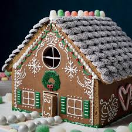
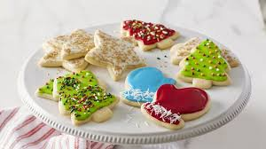
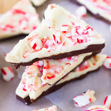
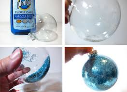
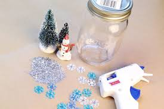

Kids Activities¶
Do you ever get tired of needing to constantly supply the young ones with non-stop attention? It’s almost as if they have an endless amount of energy most days. Well if you’re somebody who needs a break or is out of ideas to keep them busy, here’s a list of 5 things for them to do over the holidays.
1. Gingerbread House Making
This is always a hit with the kids. This one is truly a classic tradition that nearly every one has at least once in their life taken part in. One of the great pros about this activity is that it really engages the creative side of children and allows them to put their energy into something productive. Make sure to have plenty of candy and icing when the house is ready for decorating because they might go a little overboard.
You can find a great recipe and guide on the Food Network website.
2. Sugar Cookie Decorating
Sugar cookies are one of the easiest baking activities one can take part it. They’ll even be done and ready for decorating in 30 minutes or less! After they’re made, just get some icing, sprinkles, candy, etc. for your kids to decorate them with.
Here’s a recipe for sugar cookies on Allrecipes.
3. Bark
This is one of my personal favorites if I have to be completely honest. There will be a link below showing how it’s made, but the recipe is almost completely customizable. You can change out the chocolates used and you can change or leave out the fruit and nuts used as well. Two good methods to remember if you want to different flavors mixed is either loosely stirring them into one another before pouring, or you can pour one layer, then let it dry, and pour the second layer.
Here’s how to make your own bark at home.
4. Customized Ornaments
One of the most reoccurring activities that I would do as a kid was custom made Christmas ornaments. All you’ll need for this one is clear glass bulb ornaments, some ribbons to hang them when they’re finished, paint, and some paint brushes. All you’ll have to do is supervise and show them how to work a paint brush.
Here’s a walkthrough the activity along with some examples as well.
5. DIY Snow Globes
Another crazy simple project for all ages is a do it yourself snow globe. One of the good things about this particular project is that it looks super complicated, but is actually super easy and is very affordable.
Here’s a link to the full walkthrough.